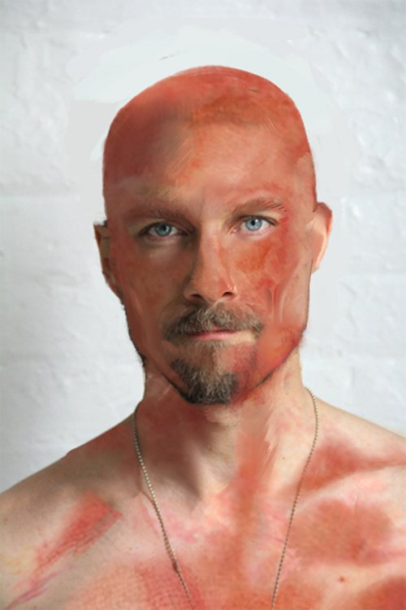

[justify]Yattığım yatağı dikleştirmişler, oturur pozisyona getirmişlerdi. Sadece sıvı besin almamı sağlamalarının yanında genç bir sağlık görevlisi ilgileniyordu benimle. Bazen perdelerin arkasındaki diğer hemşireleri görsem de, benim olduğum yere gelmemeye, buraya bakmamaya çalışıyorlar gibi bir hisse kapılmıştım. İlk kalktığımda diğerlerine ne olduğunu sormuştum genç görevliye. O ise gülümsemişti sadece. Şuanlık kendimi düşünmemi söylemişti. Can çıkar, huy çıkmaz derler. Tekrar sormak zorunda kalmıştım o yüzden. O ise Hoffman ve Thackeray dışında başka bir meslektaşımın da hayatını kaybettiğini söyledi. Nicholas ve Cornelia ise yaralanmıştı. Onları görmem gerek diye ayaklanmak istediğimde vücudum engelledi beni. Yine de umursamadan kalkabilirdim. Zorladım kendimi kalkmak için. Sağlık çalışanım ise güçlü bir adamdı. Zaten çok da karşı koyacak durumda değildim. Beni tuttuğu gibi yatırmıştı yatağa. Dokunduğu yerler delice acıdığı için çıkardığım seslere de benim kaşındığımı söyleyerek suçu üstlenmemişti. Ondan sonra da bir daha kaçmaya çalışmamam için anlaşma yapmıştık. Ben kalkmayacaktım, o ise ekibimde gelişen olayları bana anlatacaktı. Kollarımdaki yanıkları ilk gördüğümde yüzümün de öyle olacağını anlamıştım. Yine de bunu konuşmamış olmamız beni rahatlatmıştı. Her gün yanmış vücudumdaki sargılar çıkarılıyor, yanık kremleri sürülüyor, tekrar sargılanıyordu... Mide bulandırıcı bu görüntü diğer hemşirelerin benden kaçmasını bir mantığa oturtuyor, karşımdaki adama da saygı duymamı sağlıyordu. Biraz bile rahatsızlık göstermiyordu arada patlayan su kabarcıklarına. Soyadının Winthrope olduğunu öğrendiğim bu adam ilk olarak Nicholas’ın bir süre konuşamayacağını söyledi. Endişelerime de, ölmesinden iyidir diye su serpti. Konuşmalarımız devam ettikçe hayatındaki sorunları öğrendim. Kendi sorunlarımdan uzaklaştırdı bunlar beni. Arada dertleşiyor, sohbet ediyorduk havadan sudan.
Önüme, bir pipet yardımı ile içmem için koyulmuş çorbayı bitirdikten sonra Winthrope’a sigaran var mı diye sordum.
“Bay Carter.” dedi.
“Ne zamandır tütün kullanıyorsunuz?” Kaşlarımı kaldırdım düşünmek için. Kırışan alnımın gerginliğine alışmıştım artık.
“On? Belki on beş senedir...” diye cevapladım. Winthrope yakışıklı bir gençti. 30’larına varmamış olduğuna emindim. Ellerini önünde bağlayıp kafasını salladı iki yana. Azarlayacağını fark edince
“Tamam tamam.” dedim hemen.
“Annem böyle yapmaz Winthrope, iyice çocuk yaptın beni.” Gülümsedi. Yatağımın yanındaki ağrı kesicileri sıraya koymaya başladı tek tek.
“Kalkabilecek durumda mısınız?” dedi işi bittiğinde.
“Sen söyle.” dedim. Sesimde bir muziplik vardı benim için üzülmemesini sağlamak adına. Şuan için en istemediğim şeydi birine yük olmak.
“İyisiniz iyi. Kolunuzu atın omzuma.”Dediğini yaptım. Sonunda yerimden kalkabileceğim için memnundum. Bilinçli olarak bir haftadır buradaydım. Bilinçsiz olarak ne kadar yattığımı bilmiyordum bile. Omzuna attım elimi ve biraz da zor olsa kalktım. Her kemiğim ağrıyordu. Uzun zamandır ayağa kalkmamanın verdiği o korkunç bitkinlik hissi. Enerjim de yeterli değildi. Dişlerimi sıkıp acıyla inledim yine. İyi ki Winthrope yanımda diye düşünmeden edemedim. Sorun olmadığını söyleyip duruyordu. İyi gittiğimi. Gülümsemeye çalıştım elimden geldiğince. Gelmiyordu elimden ama neyse. Bana dakikalar gibi gelen oturduğum yerden kalkma ve biraz ötedeki sandalyeye kadar yürüme eziyetinden sonra oturduğum sandalyedenin karşısında olan aynayı gördüm. Yüzüm bir mumya gibi sarılmıştı sargılara. Kirli bir ayna olması daha da kötü yapıyordu her şeyi. Winthrope yanıma başka bir sandalye çekip yanık kremleri için de aramıza küçük bir sehpa çekti.
“Bir dakika.” dedim anlam vermeye çalışarak.
“Yüzümü açtığında aynada?” Evet anlamına gelen bir ses çıkardı genç adam.
“Peki, ya istemiyorsam?” “En fazla bu kadar iyileşecek Bay Carter. Geciktirmenin lüzumu yok.” Ne katı bir adamdı bu. Yine derin bir nefes aldım. Haklıydı ama daha yumuşak bir cevap beklemiştim açıkçası.
“İyi.” dedim sanki umrumda değilmiş gibi. Yüzümde yılların verdiği etkiyle yavaş yavaş çıkan kırışıkları fark etmekten daha korkunç olacak mıydı acaba? Yaşlandığını anlamak ile, yüzünün tamamen deforme olabileceği ihtimali aynı değildi kesinlikle. Bu daha korkunçtu. Adam sargılarımı tek tek çözmeye başladı. Açılan sargılar sanki bir yapboz parçasıymış gibi tamamlıyordu surat olarak taşıdığım o et parçasını. Gördükçe rahatsız oluyor, daha fazla açmamasını istiyordum. Yine de bir çocuk gibi kaçmaktansa yüzleştim aynadaki yaratıkla. Ten demeye bin şahit olan yara yığını eskiden beri taşıdığım o simayı değiştirmişti. Sadece mavi gözlerim eski bir dost gibi karşılıyordu beni. O bakmamaya çalışan hemşirelere son derece hak verdiğim bir iki andan sonra kafamı çevirdim aynadan ve yanımdaki genç yakışıklı çocuğa baktım.
“Özür dilerim.” dedim ona.
“Bir de gülümsemeye çalışıyordum. Eminim korkunç bir kaç hafta olmuştur senin için.” “Saçmalamayın.” dedi yine umursamaz bir tavırla. Elindeki kremi alnıma sürmeye başladı.
Tekrar döndüm aynaya bakmak için.
[spoiler]Bunun baya iğrenç halini düşünün. Çok dokusunu yapamadım ve adam yakışıklı abi çok da kötü olmadı :/

[/spoiler]
Gördüğüm karşısında kendimi kaybetmemek için çok zor tutuyordum kendimi. Kızlarımın bu halimi gördüklerinde verecekleri tepkileri düşündüm... Kimse böyle bir ucubenin Sihir Bakanı olmasını da istemezdi. Bayan Boleyn'in başka bir aday bulması gerekecekti. Canım aşırı sıkıldı.
“Tütün...” dedim yanmış dudaklarımla.
“Bulabilir misin?”Adam soğuk bir tavırla
“Ciğerleriniz çok kötü durumda Bay Carter.” dedi.
“Tütün yüzünden nefes-” “Winthrope. Ciğerlerim şuan en son dert edeceğim konu...”“Rica ediyorum.”[/justify]